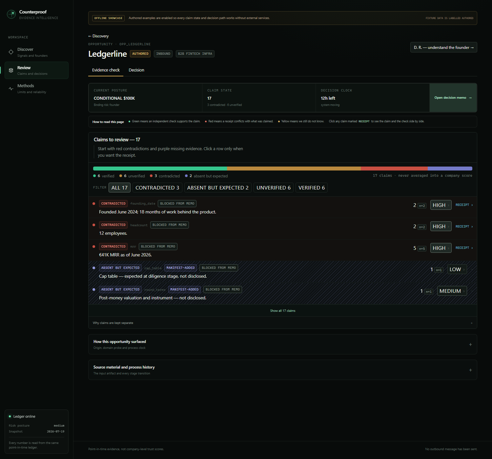

For any claim, derive the artifacts that would be observable if it were true — each with a findability prior for that founder's resource class. Then score the gap, as a likelihood ratio.
Lie detector and cold-start engine, same code. No special case, no branch to forget.

every read filters WHERE observed_at <= :asof — one chokepoint, whole system
“observation rows are facts, not state.”
The Founder Score cannot be reset — there is no code path.
Export refuses to publish if a real person's name reaches the rendered file. 845 people from public records — all pseudonymized.
A mechanical audit runs on the exact bytes before publish. No sample size → the build fails.
A tautological number in front of a finance-native judge is worse than none.
Leakage probe: the model identified 9 of 15 redacted pre-fame artifacts. That's memory, not skill — so we publish no retrodiction hit rate.